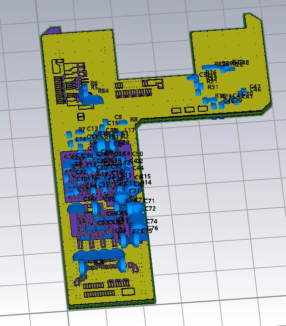
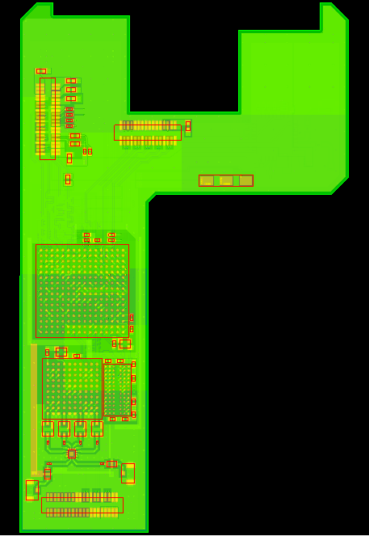

Getting Started¶
To work with PCBs, the “cst.eda” python package is provided. This package provides an interface to the layout of a Printed Circuit Board or a Package. For now, we will be using the “pcb_api” module. The Online Help article for the cst.eda package shows more details on the package.
Import PCB¶
Using the cst.eda package, PCBs can be imported for 3D simulation or to PCBStudio. Both options need an instance of “cst.eda.pcb_api.PCB” and both options create a copy of the PCB. This means any changes done to the PCB after importing will not affect the imported model.
The pcb_api.PCB instance is created using the convert_from() method with the path to our ECAD file.
For the following code examples, we will be using an example PCB: “cst_phone”.
import cst.interface
from cst.eda import pcb_api
from pathlib import Path
import tempfile
data_dir = Path(cst.interface.install_paths.root()) / "Online Help" / "PythonTutorial" / "data"
de = cst.interface.DesignEnvironment.connect_to_any_or_new()
project_dir = Path(tempfile.mkdtemp())
print(f"Working in temporary directory: {project_dir}")
Import to 3D project¶
# path to the ECAD file
pcb_file = data_dir / "cst_phone.tgz"
# Create an instance of a PCB
pcb = pcb_api.PCB.convert_from(pcb_file)
# Here you can modify your PCB. For more information, take a look at the following guides.
# create a new MWS project
prj_3d = de.new_mws()
# copy the PCB into the project and generate the 3D model
pcb.import_to(prj_3d)
# the project now contains a copy of "pcb". Further changes to "pcb" do not propagate.
It is possible to import the PCB to 3D to a CST Microwave, EM or Mphysics Studio project.
For this we use the import_to() method with the 3D project on the PCB instance.
This creates a 3D model of our example file.
It can be seen in the image below.

To get some info of the PCB we can use the pcb instance and its attributes.
Below is the function print_pcb_info() that prints the number of components, layers and nets of the passed PCB.
def print_pcb_info(pcb: pcb_api.PCB) -> None:
"""Prints general information for the passed PCB"""
components = pcb.components
print(f"PCB has {len(components)} components")
layers = pcb.stackup.layers
print(f"PCB has {len(layers)} layers")
nets = pcb.nets
print(f"PCB has {len(nets)} nets")
# test
print_pcb_info(pcb)
Passing the imported pcb to this function results in the following output.
PCB has 154 components
PCB has 21 layers
PCB has 154 nets
Import to PCB Studio¶
It is also possible to import the same pcb object into a PCB Studio.
This is done by using the set_pcb() method with the PCB object on the PCB Studio project.
# reuse `pcb`
# create a new PCBS project
prj_2d = de.new_pcbs()
# copy the PCB into the project, replacing the previous (empty) design
prj_2d.pcbs.set_pcb(pcb)
# PCBStudio now has a copy of "pcb". Further changes to "pcb" do not propagate.
This replaces the previous (empty) PCB in the PCBStudio project with a copy of our example file.

Again we can use the created function print_pcb_info().
This results in the same output as before, since the PCB itself is the same.
PCB has 154 components
PCB has 21 layers
PCB has 154 nets
In the following guides, we will show you how to modify different properties of the PCB.